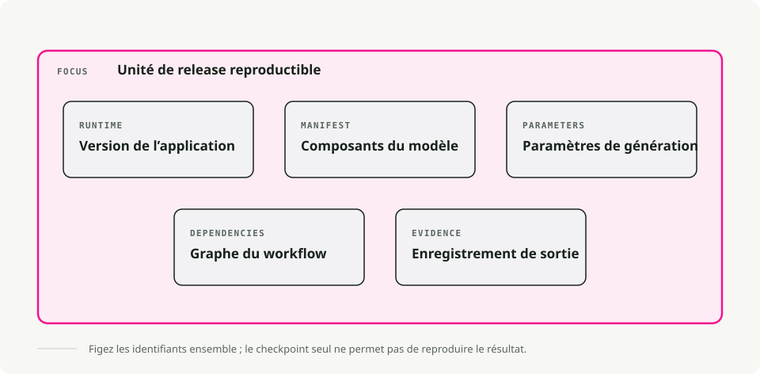
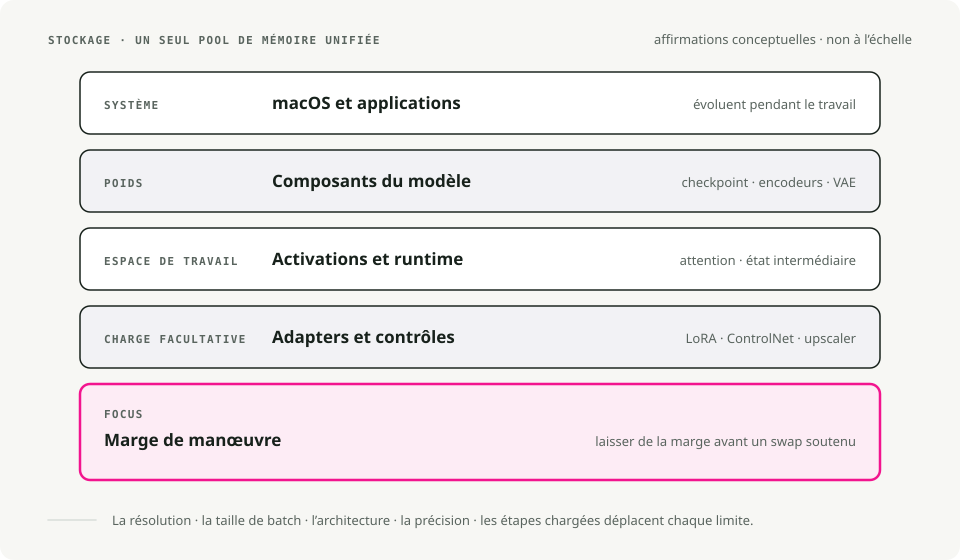
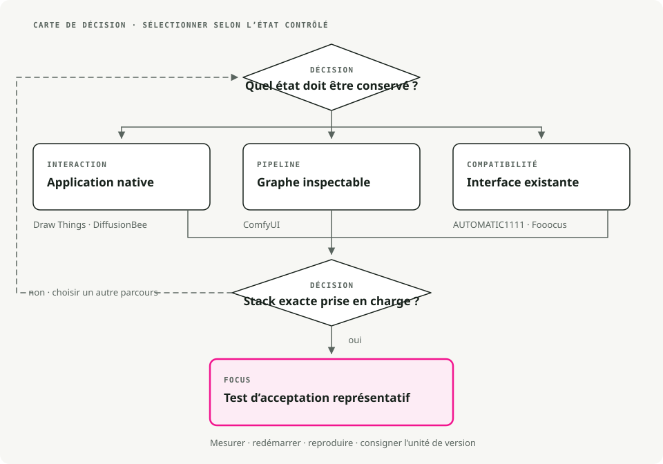

Traduction automatique
Cet article a été traduit automatiquement depuis la version originale en anglais.
Stable Diffusion sous macOS : Draw Things, DiffusionBee, ComfyUI, A1111 et Fooocus
L’exécution de Stable Diffusion sous macOS relève principalement d’un choix en matière d’outils. Un .safetensors Le fichier contient quelques gigaoctets de poids du modèle, et une fois téléchargé, n’importe quelle application locale Stable Diffusion peut l’utiliser. Ce qui varie d’une application à l’autre, c’est tout ce qui entoure le fichier : l’interface utilisateur, les conventions de flux de travail, ainsi que la quantité d’apprentissage nécessaire pour générer une image utilisable.
Par conséquent, choisir une application relève principalement d’une décision liée à l’expérience utilisateur, et non au modèle lui-même. La gamme s’étend des applications à glisser-déposer que l’on peut utiliser sans lire aucun document, jusqu’aux graphes de nodules dont il faut parfois un week-end pour en maîtriser l’utilisation.
En résumé : sous macOS, utilisez Draw Things ou DiffusionBee pour une génération locale rapide, ComfyUI lorsque vous avez besoin d’un contrôle au niveau du graphe, et AUTOMATIC1111 si la compatibilité avec les extensions est importante. Apple Silicon permet d’exécuter des workflows d’image utiles, mais la mémoire unifiée équivalente à la VRAM reste un facteur limitant.
Comment les outils Stable Diffusion fonctionnent sous macOS
Toutes ces applications remplissent la même fonction : elles fournissent une interface utilisateur pour Stable Diffusion. En arrière-plan, elles chargent les poids des modèles, gèrent la mémoire et transmettent les tâches à la GPU de votre Mac.

Comme elles reposent sur la même architecture sous-jacente, il est généralement possible de partager des fichiers de modèle..safetensors) entre eux. Téléchargez un modèle une seule fois, puis essayez-le dans plusieurs applications pour déterminer quel flux de travail vous préférez.
L’avantage du Apple Silicon
Pourquoi le Mac est-il si adapté à cela ? C’est grâce à la mémoire unifiée. Sur un PC équipé d’une GPU dédiée, on ne dispose que de 8 Go ou 12 Go de VRAM au maximum. Sur un Mac, en revanche, la GPU a accès à toute la mémoire RAM du système.

Un MacBook Pro disposant de 32 Go ou 64 Go de RAM peut charger des modèles tels que SDXL ou Flux, qui ne tiennent tout simplement pas sur un ordinateur de jeu classique.
1. Dessiner – natif et optimisé
- Téléchargement : Lien vers l’App Store
Draw Things a été conçu spécifiquement pour Apple Silicon. Il est fourni en tant qu’application native iOS/macOS, sans Python, sans terminal, sans navigateur, et il exploite Metal de manière plus efficace que tout autre logiciel de cette liste. L’ensemble des fonctionnalités n’a pas non plus été réduit : ControlNet, l’inpainting, l’outpainting, les LoRAs ainsi que des workflows scriptables y sont tous inclus. Le compromis réside dans une interface dense qui tente d’afficher beaucoup d’informations sur une seule écran. Il s’adapte du iPhone au Mac, et c’est vraiment perceptible. diffusionbee.com
Si vous souhaitez générer des images en moins de cinq minutes, DiffusionBee est le point de départ idéal. Téléchargez le fichier DMG, déplacez-le dans le répertoire Applications et lancez-le. Il n’y a pas d’étape de « chargement d’un checkpoint » ; il vous suffit de choisir un style et de saisir une prompt. L’interface est sobre et de style Apple, avec des fonctionnalités intégrées de mise à l’échelle et de suppression d’arrière-plan. Vous ne trouverez pas de paramètres avancés de générateur d’échantillons ni de pipelines complexes, et les nouvelles fonctionnalités développées par les équipes originales (comme les derniers modèles ControlNet) mettent plus de temps à être intégrées par rapport aux outils plus orientés vers les développeurs.
3. ComfyUI – Le laboratoire basé sur des nœuds
- Téléchargement : comfy.org
ComfyUI remplace les curseurs et les champs de texte par un graphe de nœuds. Vous connectez les étapes de traitement de la même manière que dans un environnement de programmation visuelle. Un pipeline tel que « Générer une image → Améliorer la résolution → Restaurer le visage » existe sous forme de graphe explicite et réutilisable, et il ne réexécute que les nœuds qui ont réellement changé, ce qui fait que les exécutions répétées sont souvent nettement plus rapides que dans d’autres interfaces utilisateur. Des milliers de nœuds personnalisés développés par la communauté l’élargissent encore davantage. La première fois que je l’ai ouvert, le tableau de dessin ressemblait à un bol de spaghettis, et l’installation initiale requiert une certaine maîtrise de Python ainsi que de la ligne de commande.
4. Stable Diffusion WebUI (AUTOMATIC1111)
- Guide d’installation : Installation sur Apple Silicon
La force d’A1111 réside dans son écosystème d’extensions. Dès l’apparition d’une nouvelle technique d’IA, qu’il s’agisse d’un nouvel outil de génération aléatoire, d’un prétraitement ControlNet ou d’un outil d’amélioration de résolution, quelqu’un finit généralement par la transformer en extension pour A1111 en quelques jours à peine. La plupart des tutoriels sur Stable Diffusion sur YouTube ciblent également cette interface, ce qui rend la recherche d’aide facile. Le programme s’exécute sous forme de tableau de bord navigateur disposant d’une vignette pour chaque fonctionnalité ; bien que pratique, cet affichage est plutôt encombré, et sa consommation mémoire est généralement plus élevée que celle de ComfyUI ou Draw Things.
5. Fooocus - Midjourney, localement
Si vous avez déjà utilisé Midjourney et que vous avez apprécié l’expérience (rédiger une instruction, obtenir une image de haute qualité sans avoir à ajuster de paramètres), Fooocus reproduit ce fonctionnement localement. Il masque les choix techniques derrière des paramètres par défaut intelligents, ce qui permet à l’interface d’éviter tout encombrement tout en assurant une qualité de sortie élevée dès le départ. Lorsque vous souhaitez imposer un style spécifique et que les paramètres par défaut s’y opposent, il n’y a pas beaucoup d’options auxquelles recourir. De plus, les performances sur Mac peuvent être inférieures à celles des cartes NVIDIA, car les optimisations sont généralement axées en priorité sur CUDA.
Tableau de comparaison rapide
| Outil | Difficulté d’installation | Style d’interface | Idéal pour |
|---|---|---|---|
| Dessiner des éléments | ★☆☆☆☆ (App Store) | Application native (Pro) | Le point idéal (Puissance + Facilité) |
| DiffusionBee | ★☆☆☆☆ (DMG) | Application native (simple) | Débutants et utilisation occasionnelle |
| ComfyUI | ★★★☆☆ (Python) | Graph de nœuds | Flux de travail complexes et automatisation |
| A1111 WebUI | ★★★★☆ (Terminal) | Tableau de bord du navigateur | Extensions et support communautaire |
| Fooocus | ★★★☆☆ (Python) | Minimaliste | Formulation de prompts au style Midjourney |
Diagramme de flux de décision
Si vous hésitez encore, suivez ces étapes :

Conseils pratiques pour les utilisateurs de Mac
1. Exigences système
- La RAM est le facteur le plus important :
- 8 Go : Suffisant pour des images de base de 512x512, mais attendez-vous à des lenteurs et des plantages avec des modèles plus récents comme SDXL.
- 16 Go : C’est le minimum recommandé. Vous pouvez exécuter la plupart des applications, y compris SDXL.
- 32 Go+ : Le rêve. Vous pouvez garder plusieurs modèles chargés tout en effectuant plusieurs tâches simultanément pendant la génération.
- Espace de stockage : Les modèles sont volumineux (de 2 Go à 6 Go chacun). Si votre Mac manque d’espace, optez pour un SSD externe.
2. Où obtenir des modèles
Le logiciel ne fait que constituer l’environnement d’exécution. Vous avez également besoin de modèles.
- Civitai: Le plus grand hub communautaire. Cherchez des « Checkpoints » compatibles avec SD 1.5 ou SDXL.
- Hugging Face: Le « GitHub de l’IA ». Plus technique, mais c’est la source officielle des modèles de base de Stability AI.**
- Types de fichiers : Préférez
.safetensors. Éviter.ckptLorsque c’est possible, car il peut théoriquement contenir du code malveillant (ce qui est rare dans la pratique, mais possible).
3. Commencez par quelque chose de simple
Ne tentez pas d’installer ComfyUI dès le premier jour. Commencez avec DiffusionBee ou Draw Things pour comprendre le fonctionnement des prompts. Lorsque vous rencontrerez des limites (“J’aimerais pouvoir contrôler la posture de ce personnage…”), alors explorez ControlNet ainsi que les outils plus avancés.
Points clés
- Choisissez l’outil en fonction du flux de travail : interface simple, contrôle graphique, écosystème d’extensions ou génération par lots reproductible.
- Apple Silicon est suffisant pour l’expérimentation et certaines préparations en environnement de production, mais les modèles volumineux et les résolutions élevées rencontrent encore des limites de mémoire.
- ComfyUI constitue l’outil le plus adapté à long terme lorsque les flux de travail doivent être sauvegardés, inspectés et reproduits.
- Organisez dès le début les fichiers de modèles, les LoRAs et les résultats ; les outils de traitement d’images deviennent rapidement désordonnés.
Références
- Dessiner des éléments - Application de génération d’images locales pour les plateformes Apple. DiffusionBee - Application locale de Stable Diffusion pour macOS. ComfyUI sur GitHub - Flux de travail de génération d’images basés sur des nœuds. AUTOMATIC1111 Stable Diffusion WebUI - Interface de Stable Diffusion lourde en extensions.